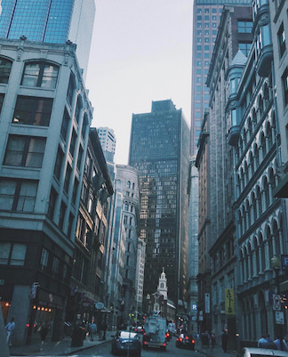

As I mentioned in my "Student Life" section, I am not certain what career path I'd specifically like to take. I do know, after graduating I'd like to find myself working near or in a city like Boston. I can't quite pinpoint what it is exactly, but there is something about the atmosphere a city offers I love so much. Whether it is the people, chaos, architecture, history, diversity, or assorted array of opportunities, I find myself experiencing my best self in environments more urban areas possess. There is an energy I find stimulates my enthusiasm and drive that I struggle to maintain in areas more rural and secluded.

That being said, I am grateful for the well-rounded characteristics, experiences and perspectives I've been able to gain being born and raised here in Maine, local to the University. Getting to grow up catching frogs, fishing, learning to dirt bike, kayaking and so much more are aspects of my childhood I value and wouldn't change. I think everyone should grow up having adventures in the robust outdoors, even if it's not your backyard like here in Maine. The mannerisms and concern for others you learn in a small town is another attribute of growing up in an area like Old Town/Orono that shouldn't be taken for granted. All areas, no matter how big, need people who can bring the essence of a small town vibe in how they treat others, and I hope to use that as part of my strengths entering the professional world of Boston.